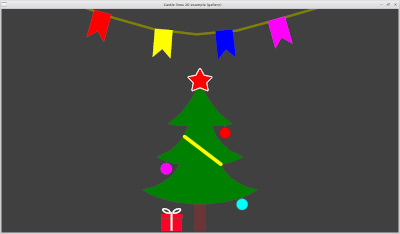
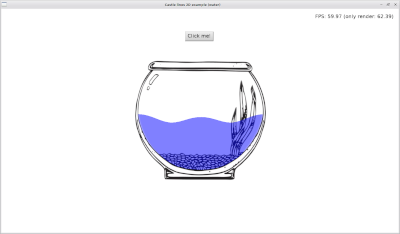
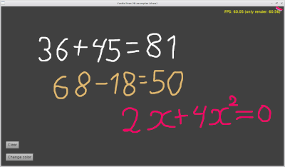

Введение
Castle Lines 2D это набор из двух компонентов для Castle Game Engine.Castle Lines 2D дает возможность создание геометрии из полигонов непосредственно в редакторе CGE.
Castle Lines 2D состоит из потомков TCastleAbstractPrimitive:
TCastleLine2D - полилиния.
TCastlePolygon2D - потенциально невыпуклый многоугольник.
Для входа в режим редактирования используйте выпадающие меню в окне иерархии объектов.
Левая кнопка мыши - добавить точку, переместить точку.
Правая кнопка мыши - удалить точку.
Средняя кнопка мыши - вызвать окно для редактирования точки.

Инструкция по подключению компонентов:
- Скачайте код CastleLine2D.
-
Укажите исходный код
TCastleLine2Dв параметрах вашего проекта. Например добавьте это вCastleEngineManifest.xml:<compiler_options> <search_paths> <path value="code/" /> <path value="../../../CastleLines2D/src/" /> </search_paths> </compiler_options> -
Также добавьте в
CastleEngineManifest.xmlстрокуeditor_units="CastleLine2D,CastlePolygon2D". Смотрите подробную документацию CastleEngineManifest.xml Откройте Ваш проект в редакторе CGE и используйте “Project -> Restart Editor (With Custom Components)”
В Lasarus не забудьте добавить пусть до исходников в “Параметры проекта -> Параметры компилятора -> Пути -> Другие модули”
Не забудьте также добавить
CastleLine2D, CastlePolygon2Dв uses, чтобы зарегистрировать компоненты во время выполнения.
Примеры
Примеры использования компонентов смотрите в /CastleLines2D/examples
   
Журнал изменений
12.01.2023:
Добавлены различные способы наложения текстуры на TCastleLine2D, TCastlePolygon2D.
Клавиша Shift теперь помогает рисовать ровные линии.
В CastlePolygon2D добавлено свойство TCastlePolygon2D.Area - площадь многоугольника
Исправлены баги.
Подробнее
TCastleLine2D
В качестве геометрии теперь используется объект типа TIndexedTriangleSetNode
Изменен тип CastleLine2D.TBeginEndMode
Добавлен тип CastleLine2D.TLineTexCoordMode
Добавлен тип CastleLine2D.TJoinTexCoordMode
Добавлено свойство TCastleLine2D.TexCoordMode
Добавлено свойство TCastleLine2D.JoinTexCoordMode
В раздел protected добавлено
Переменные TCastleLine2D.FTexY, TCastleLine2D.FTexX
Метод TCastleLine2D.AddGeometryBeginEnd
Метод TCastleLine2D.SetTexCoordMode
TCastlePolygon2D
В качестве геометрии теперь используется объект типа TIndexedTriangleSetNode
Добавлен тип CastlePolygon2D.TPolygonTexCoordMode
Добавлено свойство TCastlePolygon2D.Area
Добавлено свойство TCastlePolygon2D.TextureScale
Добавлено свойство TCastlePolygon2D.TexCoordMode
Добавлен метод TCastlePolygon2D.CalculateAreaWithoutDisplay
TCastleLine2DBase.SelfIntersections перенесен в TCastleLine2DBase
CastleLine2DMath
Добавлено CastleLine2DMath.AddBox
Добавлено CastleLine2DMath.AddTriangleTop
Добавлено CastleLine2DMath.AddRoundBoxTop
CastleLine2DMath.DoGoodTriangle теперь функция
CastleLine2DMath.AddArcBetweenPoints теперь функция
CastleLine2DMath.AddCrossSegments теперь функция
CastleLine2DMath.AddRect - изменен порядок обхода прямоугольника
Сгенерировал PasDoc 0.16.0.